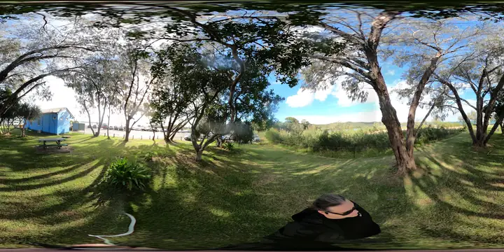

Transport clarity
Simulate safer walking, bus movement, ferry queueing, bicycle storage, kiss-and-ride, parking pressure and barge/ferry separation.
The spectrum gives community members a plain set of lenses: practical transport, cultural arrival, ecology, local enterprise, resilience, and a more experimental maker-space horizon.

Simulate safer walking, bus movement, ferry queueing, bicycle storage, kiss-and-ride, parking pressure and barge/ferry separation.
Explore signage, shade, art, language, story, view lines and the feeling of arriving on Quandamooka Country without inventing cultural authority.
Test habitat restoration, coastal adaptation, heat, shade, storm access, reef protection, osprey roosting and low-impact materials.
Model small retail, local service roles, digital custodians, information screens, media updates, co-op labour and grant evidence flows.
Keep experimental sand materials, robotics, drones, LiDAR, tunnels and 3D fabrication labelled as future R&D until serious review is ready.
Each generated image, model or world should carry a status label: official source, community observation, generated concept, engineering review needed, cultural review needed, legal review needed, or discarded idea.
Low-risk improvements that can be discussed quickly: shade, wayfinding, public screens, seating, access notes, ferry disruption communication and local training tasks.
Concepts that need partners or technical review: traffic flow, coastal structures, drone surveys, LiDAR flights, maker-space placement and retail footprints.
Do not publish sensitive cultural sites, private household details, unsafe instructions, fake approval, surveillance framing or defamatory claims.
Keep rejected ideas with a plain reason. A discarded simulation can still teach what the site cannot support.